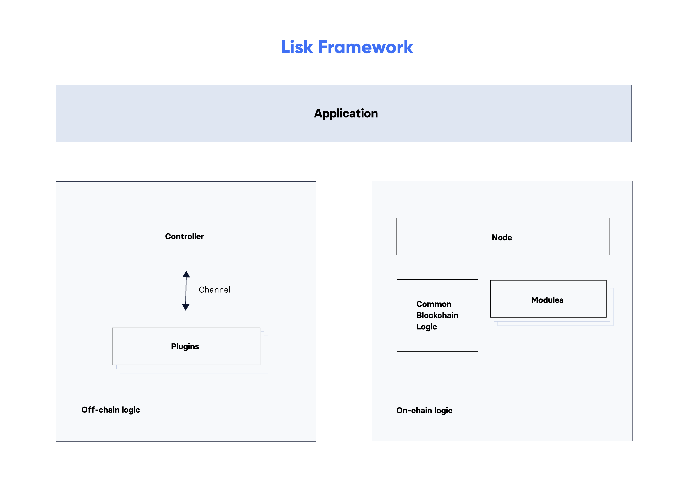

Lisk Framework

What is the Lisk Framework?
The Lisk Framework is an application framework responsible for establishing and maintaining the interactions between the modules of a Lisk blockchain application.
The Lisk Framework aims to provide a consistent and intuitive interface between each module and plugin.
Architecture overview
The diagram shown below provides a high-level overview of the architecture:

The framework is constructed by the following components:
- Application
-
The application is an entry point and manages the controller and the node.
- Controller
-
Handles the setup and teardown of channels and plugins. Also, it is responsible for the communication between the plugins and the application.
- Node
-
The main object in charge of acting on the blockchain including:
-
forging blocks
-
synchronising with the network
-
processing blocks from the network
-
… and broadcasting blocks and transactions to the network.
-
- Modules
-
Objects injected into the node with a single responsibility related to the blockchain state. Example: The “token” module is responsible for everything related to account balances.
- Plugins
-
Applications which interact with the node through RPC channels to expose information from the node outside the context of the blockchain itself. Example: “HTTPAPI, “plugin” which exposes blockchain data through HTTP
The application logic can be configured as desired in the Lisk SDK configuration, see also <<configuration, Configuration of the Lisk Framework".
Application
The Application class is an entry point to create a blockchain application.
Application can be instantiated in two ways.
//Initiates the Application including all default modules
const app = Application.defaultApplication(genesisBlock, config);
//Initiates the Application without default modules
const app = new Application(genesisBlock, config);genesisBlock represents the Genesis block and config represents the application Configuration.
The recommended way is to use defaultApplication since it comes with default modules.
If the class constructor is used, the modules need to be added manually.
|
Registering modules and plugins
In order to register an additional module below function should be used.
app.registerModule(CustomModule);Additionally, any plugin may be registered with the below function.
app.registerPlugin(CustomPlugin);Differences between custom modules and custom plugins are discussed below.
Genesis block
A genesis block must be given to the application, and all networks should have different genesis block.
const genesisBlock = {
header: {
generatorPublicKey: "",
// height can be either 0 or regenesis height
height: number,
// empty buffer or merkle root of the previous blocks from previous network
previousBlockID: Buffer,
reward: 0n,
signature: "",
// timestamp of the blockchain in unix timestamp in second
timestamp: number,
// transactionRoot is alway empty hash
transactionRoot: Buffer.from('e3b0c44298fc1c149afbf4c8996fb92427ae41e4649b934ca495991b7852b855', 'hex'),
version: 0,
asset: {
// number of initial round to use the initDelegates
initRounds: number,
// address of initial delegates
initDelegates: Buffer[],
// encoded accounts for the initial state
accounts: Buffer[],
},
},
payload: [],
}| A valid genesis block can be created using @liskhq/lisk-genesis as described here. |
Configuration
The application config object is passed to the Application and must follow the Configuration schema.
For more information about how to configure your blockchain application, check out the guide Configure a blockchain application.
Action and event interfaces
The Lisk Framework defines actions and events which can be invoked and subscribed through a channel.
Action and Events can be used as below.
// action invoke
const { data }= await channel.invoke('actionName', input);
// event subscribe
channel.subscribe('eventName', ({ data }) => {});Application actions
-
app:getConnectedPeers- Returns all connected peers -
getDisconnectedPeers- Returns all disconnected peers -
getForgers- Returns the status of all registered forgers information for current round -
updateForgingStatus- Enable or disable forging for a registered forger in config -
getForgingStatus -
getTransactionsFromPool -
postTransaction -
getLastBlock -
getAccount -
getAccounts -
getBlockByID -
getBlocksByIDs -
getBlockByHeight -
getBlocksByHeightBetween -
getTransactionByID -
getTransactionsByIDs -
getSchema -
getRegisteredModules -
getNodeInfo
Application events
-
app:ready- Fired when the application starts -
app:shutdown- Fired when application stops -
app:network:ready- Fired when network has at least one outbound connection -
app:network:event- Fired when application receives P2P event from the network -
app:transaction:new- Fired when the node receives a new transaction -
app:chain:fork- Fired when the node received a block from forked chain -
app:chain:validators:change- Fired when node updates validator set -
app:block:new- Fired when a new block is added to the blockchain -
app:block:delete- Emitted when a block is deleted from blockchain